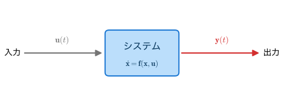
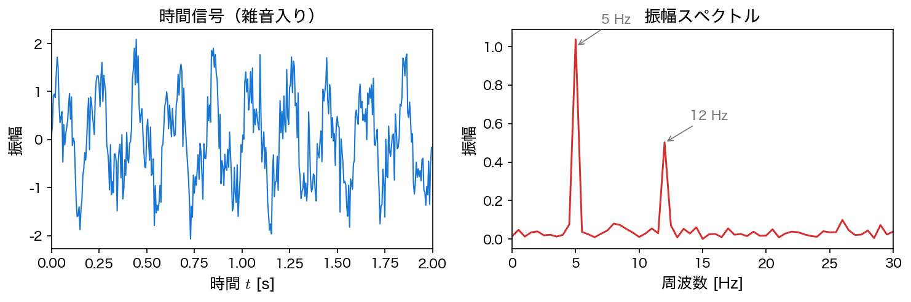
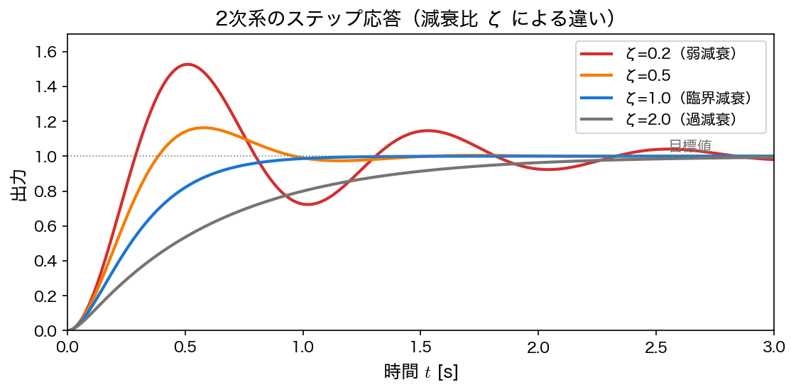
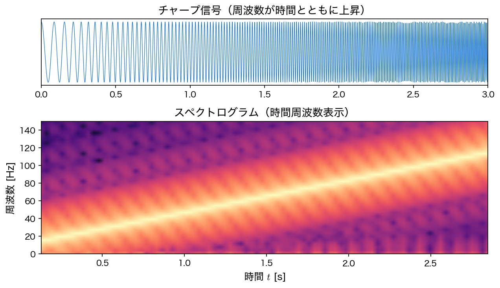
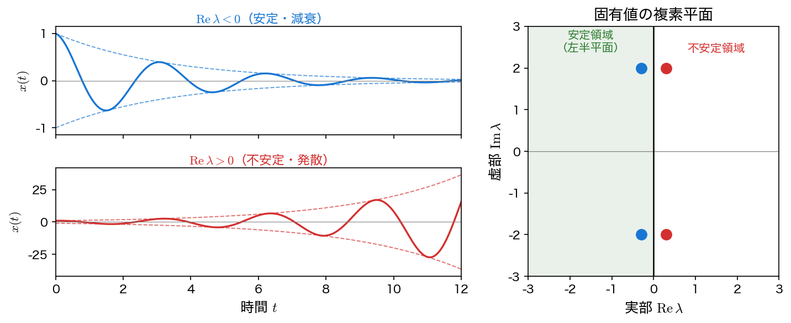
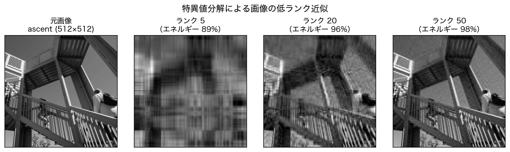
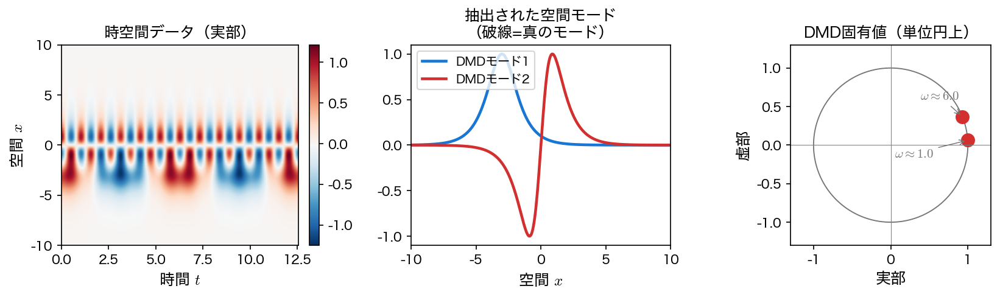

第1回: ガイダンスと動的システム
講義の進め方
本講義は、手法を学ぶ講義回と、学んだ手法を実問題に応用する 発表会 の組み合わせで進む。運営の要点は次のとおり（詳細は ホーム を参照）。
- AI の利用は歓迎する。 演習・課題のコード生成に AI（ChatGPT・Claude・Gemini・GitHub Copilot など）を使ってよい。ただし 生成したコードは全ての行に目を通し、各ステップが何をしているのかを理解すること。講義の最後に演習の時間が取れた回に、自分のコードを解説してくれた学生はプラス評価する。理解を伴わないコードは自分の力にならない。
- 成績評価に期末試験はない。成績は発表のみで決め、発表 1 回 50 点 × 2 回 = 100 点とする。これとは別枠で、講義の最後に演習の時間が取れた回に限り、コード解説による加点がある（適宜、合計 100 点を上限）。
- 発表会は第5回・第15回の 2 回開催し、全員が 2 回とも発表する。テーマは ① 第5回＝フーリエ変換、② 第15回＝第6〜14回の手法（ラプラス変換・短時間フーリエ変換・ウェーブレット変換・線形安定性・直交多項式展開・特異値分解・動的モード分解）。学んだ手法で解ける実問題を各自が探して解き、問題設定・手法・コード解説・結果・考察を発表する。データは模擬データでもオープンデータでもよい。
- 1 人の持ち時間は 10 分（発表 8 分＋質疑 2 分）、提出物は C-learning へ発表会前日 23:59 まで。詳細は 発表会ガイド を参照。
今回の目標
- システム・動的システムの概念を理解し、本講義で扱う手法の全体像を把握する
- 動的システムを記述する 状態空間表現 の考え方を知る（詳細は 動的システムと状態空間表現）
- Python の実行環境（Google Colab）が手元で動作することを各自で確認する
システムとは
何かを入力すると、それに応じて何かが出力される。この入力と出力の間の関係を システム（system）と呼ぶ。アンプに音声を入れると増幅された音が出る、振り子に力を加えると揺れる、経済に金利という入力を与えると景気が動く ── いずれも入力 \(\mathbf{u}(t)\) に対して出力 \(\mathbf{y}(t)\) を返すシステムである。

とりわけ、出力が現在の入力だけで決まらず、内部状態（過去の履歴）にも依存するシステムを 動的システム（dynamical system）と呼ぶ。動的システムの振る舞いは、状態の時間変化を表す常微分方程式
で記述される。本講義の前半では、この \(\mathbf{f}\) が線形である場合 ── すなわち線形常微分方程式系 ── を解析する強力な道具立てを学ぶ。状態空間表現の詳しい説明は 動的システムと状態空間表現 で行う。
システム解析が動かす世界
システム解析の手法は、現代の科学技術のいたるところで使われている。ここでは、本講義で学ぶ手法が実際にどんなことを可能にするのかを、計算結果の図とともに紹介する。各例には本講義のどの回で扱うかを示した。今は数式の細部が分からなくても構わない。「こんなことができるのか」という感覚を持ち帰ってほしい。
身近なところにもシステム解析
音声認識・音楽アプリの周波数表示・心電図の解析・地震計の波形処理・制御工学（エアコンや自動運転）・画像圧縮・推薦システム ── これらはすべて、本講義で学ぶ手法の延長線上にある。
① 周波数で世界を見る — フーリエ解析
複雑に見える信号も、異なる周波数の波の重ね合わせとして表すことができる。信号を周波数成分に分解する道具がフーリエ変換である。下図左の雑音に埋もれた時間波形を周波数の世界へ移すと（右）、もとの信号に含まれる \(5\ \mathrm{Hz}\) と \(12\ \mathrm{Hz}\) の成分が鋭いピークとしてはっきり現れる。

考え方. 信号 \(f(t)\) を三角関数（複素指数関数）の重ね合わせとして表す。
ここで \(\omega\) は 角周波数（単位 rad/s）で、図の横軸に使った周波数 \(f\)［Hz］とは \(\omega = 2\pi f\) の関係にある。この積分が収束するには \(f\) に条件（例えば絶対可積分）が要るが、詳しくは第3回で扱う。実際の計算では、計算量を \(O(N^2)\) から \(O(N\log N)\) に削減する高速フーリエ変換（FFT）を用いる。
本講義との接続
第2〜4回 フーリエ変換。フーリエ級数・パーセバルの等式と Gibbs 現象・フーリエ変換と FFT・高速畳み込み・スペクトル解析とフィルタリングを学ぶ。学んだ手法は 第5回の発表会① で各自の実問題に応用する。
② 過渡応答と安定性 — ラプラス変換
目標値を与えたとき、システムの出力がどう立ち上がり、行き過ぎ、落ち着くか（過渡応答）は、制御工学の中心的な問いである。ラプラス変換は、微分方程式を \(s\) の代数方程式に変換し、システムを伝達関数として扱えるようにする。下図は、2 次系のステップ応答を減衰比 \(\zeta\) を変えて計算したものである。\(\zeta\) が小さいと大きく行き過ぎて振動し、大きいとゆっくり立ち上がる。

考え方. ラプラス変換 \(F(s) = \displaystyle\int_0^\infty f(t)\, e^{-st}\, dt\) で、入力 \(u(t)\) と出力 \(y(t)\) をそれぞれ \(U(s)\), \(Y(s)\) に移すと、両者の関係は伝達関数 \(G(s) = Y(s)/U(s)\) にまとまる（入力 1 本・出力 1 本の線形時不変系で、初期値をすべて \(0\) とおいた場合）。ここで線形時不変系とは、(i) 重ね合わせが成り立つ（入力を \(a\) 倍すれば出力も \(a\) 倍になり、2 つの入力の和に対する出力はそれぞれの出力の和になる）、(ii) 係数が時間によらない（同じ入力を時間 \(T\) だけ遅らせると、出力も同じ形のまま \(T\) だけ遅れる）── この 2 つを満たすシステムのことである。上の RC 回路やばね・質量・ダンパ系は、\(R, C, m, c, k\) が定数である限りこれに当たる。逆に、燃料を消費して質量 \(m(t)\) が減っていくロケットや、温度で抵抗値が変わる回路は時変系で、この枠には入らない（状態空間の言葉による定義は 動的システムと状態空間表現 を参照）。\(G(s)\) は入力の選び方に依らない、システムそのものの性質である。
\(G(s)\) が分かると、次のことが分かる。
- どんな入力に対しても出力が求まる：\(Y(s) = G(s)\,U(s)\)。時間領域では畳み込みという面倒な積分が、\(s\) の世界では単なる掛け算になる。\(G(s)\) はシステム固有で入力に依らないから、一度求めてしまえば、入力を差し替えるたびに微分方程式を解き直す必要はない（ただし時間波形 \(y(t)\) そのものが欲しいときは、最後に逆ラプラス変換で \(Y(s)\) の世界から戻す）。
- 安定性と応答の速さ：分母を \(0\) にする \(s\)（極）の位置で決まる。実部が負なら減衰し、その絶対値が大きいほど速い。虚部があれば振動する。
- 定常値：ステップ入力に対して最終的に落ち着く値は \(G(0)\) である（最終値定理）。
- 周波数応答：安定な系なら、\(s = i\omega\) とおいた \(G(i\omega)\) が、角周波数 \(\omega\) の正弦波入力に対する定常応答のゲインと位相を与える。
本講義との接続
第6〜8回 ラプラス変換。ラプラス変換・逆変換、畳み込み積分、各種公式と応用を学ぶ。学んだ手法は、後半の手法とあわせて 第15回の発表会② で応用する。
③ 刻一刻と変わる周波数 — ウェーブレット変換
フーリエ変換は「どの周波数が含まれるか」を教えてくれるが、上の図のような振幅スペクトルを見ても「いつその周波数が現れたか」は読み取れない（時刻の情報は位相のほうに畳み込まれている）。音楽・音声・地震波のように、周波数が時間とともに変化する信号には、時間と周波数を同時に見る道具が要る。それがウェーブレット変換（や短時間フーリエ変換）である。下図は、周波数が時間とともに上昇する信号（チャープ）を時間周波数平面に表したもので、周波数が右肩上がりに動く様子が見える。

本講義との接続
第9回 短時間フーリエ変換・第10回 ウェーブレット変換。時間分解能と周波数分解能のトレードオフを理解し、時間周波数解析の手法を学ぶ。
④ 壊れるか・育つか — 線形安定性
動的システムが平衡点の近くで収まっていくのか、それとも発散していくのかを判定するのが安定性解析である。線形系では、係数行列の固有値の実部の符号がそれを決める。すべての固有値の実部が負ならば擾乱は減衰し（安定）、1 つでも正ならば指数関数的に成長する（不安定）。橋の共振、流体の乱れ、人口の爆発・絶滅 ── あらゆる現象の「分かれ目」がここにある。

考え方. 線形系 \(\dot{\mathbf{x}} = A\mathbf{x}\) の解は \(\mathbf{x}(t) = e^{At}\mathbf{x}_0\) であり、\(A\) の固有値 \(\lambda\) が \(e^{\lambda t}\) の増減を支配する。
本講義との接続
第11回 線形安定性。固有値解析によって平衡点の安定性を判定する方法を学ぶ。
⑤ 大きなデータを絞り込む — 特異値分解
画像・センサ・実験データは、しばしば巨大だが本質は少数の成分に集約できる。特異値分解（SVD）は、行列を重要な成分の順に分解し、ごく一部だけで全体をよく近似することを可能にする。下図は、グレースケール画像をランク（使う成分数）を変えて再構成したもので、わずか数十成分で元画像がほぼ復元できることが分かる。画像圧縮・ノイズ除去・主成分分析・推薦システムの背骨となる手法である。

考え方. 任意の実行列 \(A\) は \(A = U\Sigma V^\top\) と分解できる。ここで \(U\), \(V\) は直交行列、\(\Sigma\) は特異値 \(\sigma_1 \ge \sigma_2 \ge \cdots \ge 0\) を対角に並べた行列である。これは「\(A\) を掛ける」という操作が 直交変換 → 軸方向の伸縮 → 直交変換 の 3 段に分かれる、と読める ── 右から順に、\(V^\top\) が \(V\) の列ベクトルを座標軸に重ね、\(\Sigma\) が第 \(i\) 軸を \(\sigma_i\) 倍に伸縮し、\(U\) がその向きを \(U\) の列ベクトルへ移す（直交変換は長さと角度を保つ変換で、回転のほか鏡映も含む）。したがって単位円（単位球）は必ず楕円（楕円体）に写り、その半軸長が特異値 \(\sigma_i\) である（図による説明は SVD の原理と低ランク近似）。特異値 \(\sigma_i\) の大きい順に上位 \(k\) 個だけを残すと、ランク \(k\) 以下の行列のなかで誤差が最小の近似が得られる（誤差をスペクトルノルムで測っても Frobenius ノルムで測っても、同じものが最小になる）。
本講義との接続
第13回 特異値分解とその応用。SVD の原理と、画像やデータへの応用を学ぶ。
⑥ データから方程式を取り出す — 動的モード分解
観測された時系列データだけから、その背後にある支配的なモード（空間パターン）とその振動周波数を抽出できたら強力である。動的モード分解（DMD）は、SVD と固有値解析を組み合わせて、まさにこれを実現する。ただしうまくいくのは、データが少数のモードの線形な重ね合わせでよく表され、標本化間隔が細かく（エイリアシングを起こさず）、雑音が大きすぎない場合である。下図では、2 つの空間モードが異なる周波数で振動する時空間データ（左）から、DMD が空間モード（中）と固有周波数（右）を正しく取り出している。

本講義との接続
第14回 動的モード分解とその応用。SVD を土台に、データ駆動でシステムのモードを抽出する手法を学ぶ。第6〜14回で学んだ手法は 第15回の発表会② で応用する。
さらに広がる応用
図にはしないが、本講義の手法は次のような場面でも活躍する。
- 直交多項式展開 — 関数を Legendre 多項式や Chebyshev 多項式といった直交関数系で展開すると、微分方程式を高精度に解いたり、データを少数の係数で表したりできる。スペクトル法や数値積分（Gauss 求積）の基礎である。（第12回 直交多項式展開）
本講義で扱うトピック
本講義では、上で見た応用を実現するための手法を、数学的な原理の理解と Python による実装の両面から段階的に学ぶ。
| 手法 | 扱う回 | 何が分かるか |
|---|---|---|
| フーリエ変換（①） | 第2〜4回 | 信号に含まれる周波数成分 |
| ラプラス変換（②） | 第6〜8回 | 過渡応答・伝達関数・安定性 |
| 短時間フーリエ変換・ウェーブレット変換（③） | 第9・10回 | 時間とともに変わる周波数 |
| 線形安定性（④） | 第11回 | 平衡点が安定か不安定か |
| 直交多項式展開 | 第12回 | 関数の効率的な展開・高精度計算 |
| 特異値分解（⑤） | 第13回 | データの本質的な低次元構造 |
| 動的モード分解（⑥） | 第14回 | データから抽出するモードと周波数 |
| 発表会①・② | 第5・15回 | 学んだ手法で実問題を解いて発表 |
これらに共通する出発点が、次のページで学ぶ 動的システムと状態空間表現 である。
開発環境について
本講義の演習は Python で行う。最も手軽なのは、ブラウザだけで動く Google Colab である。
まずは Google Colab から
インストール不要で、NumPy・SciPy・Matplotlib などが最初から使える。Google アカウントがあればすぐに始められる。手順は Google Colab を参照すること。
- Google Colab — ブラウザだけで完結する実行環境（推奨）
- ローカル環境 — 自分の PC に Python を入れる場合（Anaconda / venv）
環境が正しく動くかは、動作確認 で確かめられる。